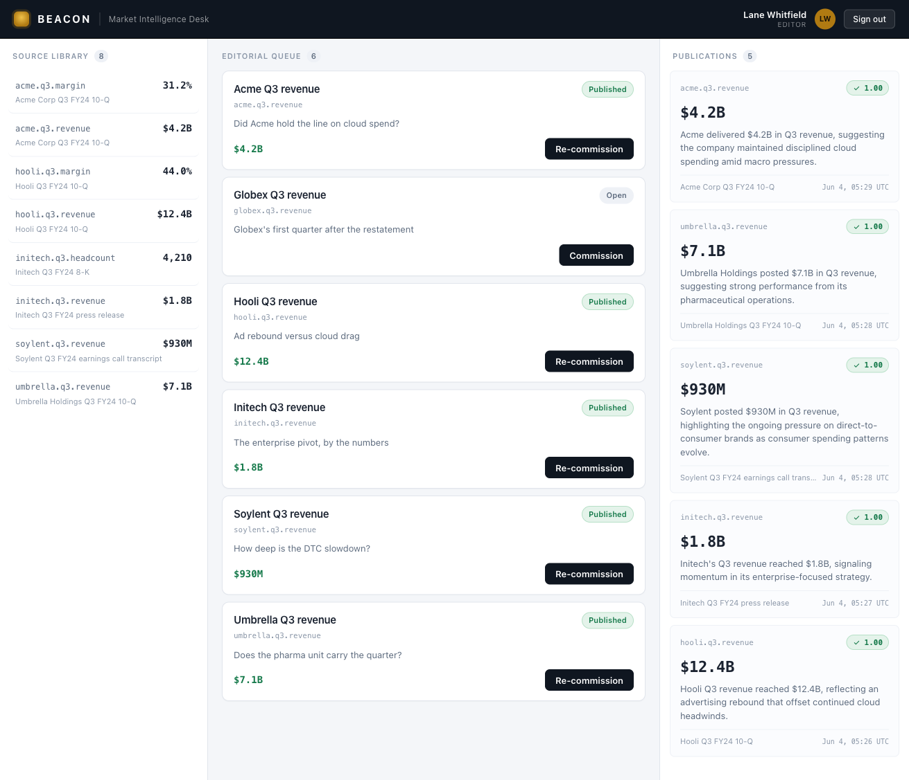

A market desk lets a live LLM write its briefs — and structurally cannot publish a figure it cannot ground. Every claim is scored against its cited Source before the brief is ever persisted; a figure with no authoritative filing fails closed and never becomes a published row.
A language model will state a number with total confidence whether or not the number is real. The failure that makes misinformation hard is not that the model lies on purpose — it is that confident fabrication and grounded fact are indistinguishable at the point of publication. A desk that lets an LLM write its briefs will, sooner or later, publish “Q3 revenue was $9.9B” with the same fluency it publishes the true figure. Content filters and an LLM-as-judge “does this look right?” pass do not close the hole: they are themselves probabilistic, and they sit beside the write path, not across it.
Beacon is a market-intelligence desk. It publishes short Briefs answering Topics on its editorial agenda. Every factual claim must cite a Source — a filed figure held as a tenant-local object — and the figure the Brief asserts must equal what the Source holds. A market brief is the ideal misinformation surface: a claim is a number, and that number either is in the cited filing or it is not. Grounding here is falsifiable, not subjective.
Beacon closes the hole structurally.
Publishing is a governed Action whose eval gate
scores the produced claim against the cited Source object
before the claim is ever persisted. A
brief whose figure does not match the authoritative filing
fails its case, scores below threshold, and raises
EvalGateFailed: nothing is written, nothing is
announced, nothing is even audited. The misinformation never
becomes a published row. The gate is a deterministic
predicate over real data — “the figure the
writer asserts equals the figure the cited Source
holds” — not a judgment call.
No human approves this, and no output is scanned. The eval gate is the entire, autonomous, fail-closed control: it runs against the Action’s produced values before the Object Store ever sees them, and sub-threshold is fail-closed. You cannot ground against a source you do not hold — a missing or retracted filing yields zero rows, the criterion is unevaluable, and it fails closed. The desk does not decide to withhold a brief it can’t stand behind; it is unable to publish one.
The cast
The boundary that matters is the writer’s draft → the published record — the write-side adoption gate. This is the structural twin of the LLM02 slice: LLM02 made sensitive egress unconstructable at the read-side assembler; LLM09 makes ungrounded publication unconstructable at the write-side gate. Same claim — governance is structural, not advisory — turned onto a different crossing.
| Who | Role |
|---|---|
| Beacon | The market-intelligence desk; a substrate tenant |
| The editor | Human; signs in, works the topic queue, and commissions briefs. Approves nothing — there is no review gate and no output scanner; the editor watches the desk publish or refuse |
| beacon_writer |
The live LLM agent; reads its context bundle
(the Topic + the source corpus), drafts a
figure, and calls the gated
publish_brief Action. Self-grounds
from its sources or declines — it
cannot force a number through
|
| The Source corpus |
The authoritative filings — eight Source
objects (Acme’s $4.2B Q3
revenue, Hooli’s $12.4B,
Initech’s $1.8B, …),
each read live by the gate. The ground truth a
claim is checked against
|
What I built in the slice — and what I didn’t
| I wrote (the surface) | The substrate enforced (inherited, not built) |
|---|---|
| The Beacon console (SvelteKit) — the Source Library, the Editorial Queue, the Publications record, and the Composer that shows the writer’s prose beside the gate’s decision |
The Action eval gate.
publish_brief declares an
eval_suite; the Action Mediator
runs that suite against the effect’s
produced values before the
Object Store ever sees them. Sub-threshold is
fail-closed: EvalGateFailed, with
nothing persisted, announced, or audited
|
The beacon_writer agent flow and
the seeded agenda (six Topics, one with no
Source) the substrate originates at startup
|
A deterministic grounding suite
— a coverage case (the metric must
be one Beacon covers) plus one guard
case per metric:
figure == Source[claim_key == K].figure,
the Source read live via the substrate’s
Object Query. A missing or retracted Source
yields zero rows and the criterion
fails closed
|
| Three thin drivers — argon2id login, the live OpenRouter seam, and the object store |
The “tool failure is
feedback” contract —
EvalGateFailed returns to the model
as a tool result, so the gate doesn’t
merely block: it forces the writer to ground
itself or decline to publish. The self-correcting
loop is the production flow
|
The grounding suite is generated from the same single list of covered metrics that seeds the topic queue, so the gate and the corpus can never drift apart. The guarantee is structural, not authored prose: a figure is publishable because it matches a held filing, not because someone remembered to check it. I could not forget to apply the gate — it sits across the write path, not beside it.
The walkthrough
Every screen below was captured live from a single clean end-to-end run on the running stack — live substrate, live OpenRouter, and the real argon2id login. Where a guarantee is proven by an in-process contract test rather than a console click, the evidence says so.
Sign in — the desk’s front door
The editor signs in at the desk. Real authentication, not a demo gate: the password is verified against an argon2id store wired below the substrate spine, and the session is carried in an HttpOnly cookie, re-resolved on every request. The browser never speaks to the substrate directly — it speaks only to Beacon’s own server, which makes every governed call on the editor’s behalf.
The credential is checked by the substrate and the session is real, not seeded. Every governed call that follows — commissioning a brief, running the gate, persisting a publication — runs under the editor’s resolved scope, server-side, with the browser holding nothing it could leak.
The desk — three rails, lived-in
After sign-in the editor lands on the desk. The Source Library holds the authoritative corpus — eight filed figures, each a Source object the gate can read. The Editorial Queue is the agenda: six Topics, some already published, one still open. The Publications rail is the record — every brief that cleared the gate, with its grounded figure and its score. Nothing on the screen explains itself; there are no “this demonstrates…” banners and no mechanism labels.

$4.2B, Hooli $12.4B, Initech
$1.8B, …). The governance is
felt in the next two screens, never captioned.
The Source corpus is the ground truth the gate checks a claim against — not a label on the brief, but a tenant-local object read live at publish time. The queue and the gate are seeded from the same single list of covered metrics, so a topic the desk can raise and a figure the gate can ground are guaranteed to come from one source of truth.
A grounded brief publishes
The editor commissions Acme Q3 revenue. The
live beacon_writer reads its context bundle
— the Topic and the source corpus — drafts a
figure, and calls the publish_brief Action. The
Action’s eval gate scores the drafted
$4.2B against the Acme Source read live from the
store: it matches, the case holds, the suite scores
1.00. The brief is persisted and surfaces in
Publications with a Grounded verdict.
$4.2B; the gate scores that figure against
the Acme Source read live from the store — it
matches, the suite scores 1.00, and the
brief persists as Grounded. The Composer
shows the model’s draft beside the gate’s
ruling and the filing it was checked against.
The gate is a deterministic predicate — the figure the writer asserts equals the figure the cited Source holds — run by the Action Mediator before the Object Store ever sees the value. A publication exists only because it cleared, so the row in Publications carries the gate’s score: the model’s draft and the gate’s ruling, side by side.
An ungroundable brief is withheld
The editor commissions Globex Q3 revenue
— a Topic Beacon holds no Source for;
the filing was retracted. Whatever the writer drafts, the
gate has nothing authoritative to check it against, so the
guard fails closed: the figure
could not be grounded, and the Action raises
EvalGateFailed. No Globex brief is persisted,
and no Globex row ever appears in Publications.
EvalGateFailed). The writer, handed the
refusal back as a tool result, declines rather than
invent a number: “Beacon holds no source on
file for the metric globex.q3.revenue.”
This block needs no contrived adversarial probe. A topic
whose authoritative source is absent simply cannot be
grounded, every time. The desk does not
decide to withhold — it is
unable to publish. And because
EvalGateFailed returns to the model as a tool
result, the gate doesn’t merely stop the write: it
forces the writer to self-ground or decline. The
self-correcting loop is the production flow, not a
bolted-on retry.
The honest proof — what the console can and can’t show
The live console proves the gate’s
verdict: a brief exists only if it cleared,
so a publication carries the gate’s score, and a
withheld topic shows the block. But a blocked publish, by
design, leaves no trace at all — the Mediator
returns before any audit write on
EvalGateFailed — so the console
reconstructs “withheld” from the absence
of a brief, not from a logged denial.
The load-bearing proof that an ungrounded figure is
never persisted is therefore not in the UI;
it is the hermetic in-process catch-trace
(misinformation_test.zig) run against the real
Action Mediator: record a Source at $4.2B, then
watch a grounded $4.2B brief pass the gate and
persist while an ungrounded $9.9B brief and a
brief about an unsourced metric each raise
EvalGateFailed and write nothing — the
store ends with exactly the one grounded
brief. The gate is deterministic over the produced
values, so this is the structural guarantee, proven
model-free; the live walkthrough above is the same guarantee,
exercised end to end through a real model and a real UI.
Proven vs. not-yet — the honesty ledger
| Claim | How it’s proven |
|---|---|
| A grounded figure publishes — the drafted value matches the cited Source |
Live — Acme Q3 revenue drafted at
$4.2B, gate scores
1.00 against the Acme Source,
persists as Grounded in
Publications
|
| An ungroundable figure is never persisted — no Source means no publication |
Live — Globex Q3 revenue WITHHELD
(EvalGateFailed, no row in
Publications) + in-process
misinformation_test.zig (the store
ends with exactly the one grounded
$4.2B brief)
|
| A wrong figure is rejected, not just a missing one |
In-process — an ungrounded
$9.9B brief against a Source held at
$4.2B raises
EvalGateFailed and writes nothing
|
| The gate runs before persistence, not beside it |
Structural — the Action Mediator runs the
eval_suite against the produced
values before the Object Store sees them;
sub-threshold yields nothing written, announced,
or audited
|
| The defense is structural, not the model’s good behaviour | The gate is a deterministic predicate over real data; the in-process proof is model-free, and the writer is handed the refusal as feedback regardless of what it drafts |
| The gate and the corpus cannot drift apart | Structural — the grounding suite is generated from the same single list of covered metrics that seeds the topic queue |
| A blocked publish leaves no audit trace |
By design — the Mediator returns before any
audit write on EvalGateFailed; the
console reconstructs “withheld” from
the absence of a brief, and the
in-process test carries the never-persisted proof
|
Why this is LLM09, structurally
OWASP LLM09 (Misinformation) is hard precisely because the usual defenses are brittle: you cannot reliably trust a model not to state a fabricated figure with full confidence, and an LLM-as-judge “does this look right?” pass is itself probabilistic and sits beside the write path. Beacon sidesteps both by moving the control off the model entirely and across the crossing:
-
The gate is across the write path, not beside
it.
publish_briefdeclares aneval_suite; the Action Mediator runs it against the produced values before the Object Store sees them. Sub-threshold is fail-closed —EvalGateFailed, nothing persisted. The misinformation cannot become a published row. -
Grounding is a deterministic predicate, not a
judgment call. The guard case is
figure == Source[claim_key == K].figure, with the Source read live via Object Query. A missing or retracted Source yields zero rows, the criterion is unevaluable, and it fails closed. You cannot ground against a source you do not hold. -
The writer self-grounds or fails.
EvalGateFailedreturns to the model as a tool result — the substrate’s “tool failure is feedback” contract — so the gate forces the writer to ground itself from its sources or decline to publish, rather than inventing a number to force its way through.
A market desk that lets a live LLM write its briefs, and still cannot publish a figure it cannot ground — because the substrate, not the model, scores every claim against its cited Source before a single row is written.
Every evidence slot above was filled from a single clean
end-to-end walkthrough on the running stack (2026-06-04)
— live substrate, live OpenRouter, and the real
argon2id login. The live console proves the gate’s
verdict; because a blocked publish leaves no audit trace by
design, the load-bearing guarantee that an ungrounded figure
is never persisted is proven model-free in-process by
misinformation_test.zig. Where a guarantee is
proven by an in-process test rather than a console click, the
evidence says so.